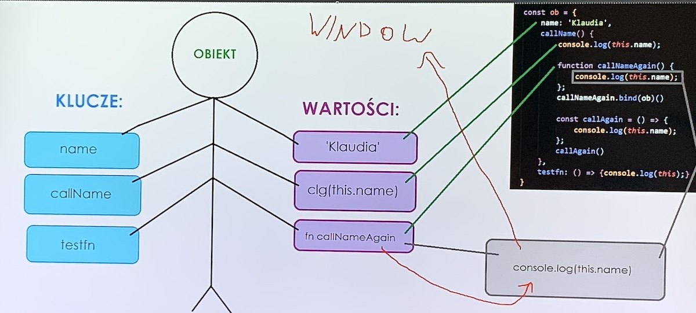

wielkość liter ma znaczenie - javascript jest jezykiem case sensitive
najlepiej uzywac notacji wielbłądziej camelCase
w zmiennej nie możemy używać myślników(minus), kropek, spacji (jedynie _)
nie możemy ustwaiać cyfr jako pierwszego znaku w nazwie zmiennej
nie rozpoczynamy nazwy zmiennej od dużej litery
nie mozemy uzyć zarezerwowanego słowa lista
na
mdn
zakres lokalny i globalny - jezeli zmienna jest zadeklaroawna w zakresie globalnym mamy do niej
dostep w
każdym miejscu kodu, jesli jest zadeklarowana w zaresie lokalnym (wewn jakiejs funkcji) to mamy do
niej
dostep w obrebie tej funcji
do zmiennej globnalnej przed nazwa funcji dodajemy znak dolara (dobra praktyka a nie obowiazek),
zeby
bylo
wiadomo ze jest to zmienna globalna
w zmiennej lokalnej mozemy zadeklaroawc jeszecze raz taka sama zmienna i nie wplynie ona na globalna
TYPY DANYCH
TYPY PROSTE
STRING
SUPER STRING / TEMPLATE STRING - stringa zaisujemy w grawisach a nie w cudzyslowiach
console.log(`Cześć, jestem ${name} i mam ${age} lat`);
starym sposobem zapisalibysmy to tak
console.log('Cześć, jestem ' + name + ' i mam ' + age + ' lat');
w super string zeby tekst przeszedł do nowej linii wystarczy kliknać (enter)
starym sposobem w stringu musielibysmy wpisac "\n" (takie br)
STRING METODY - ważne
.includes() - sprawdza czy jakis string jest zawarty w innym stringu
.indexOf() - podaje liczbe jaka jest ilosc znakow do pierwszego wyszukiwanego slowa (mozna wpisac
wartosc
poczatkowa
.lastIndexOf() - podaje liczbe jaka jest ilosc znakow do ostatniego wyszukiwanego slowa (mozna
wpisac
wartosc poczatkowa
.match() - sprawdza czy wyrażenie pasuje do złożonego wzorca
.padStart() i .padEnd() - służą do „automatycznego” rozszerzania ciągu znaków. przyjmują dwa
argumenty
(dlugosc o ile ma byc ciag rozszerzony a drugi znak/i o jakie ma byuc roszerzony
.repeat - słzy do powtarzania stringa odpowiednia ilosc razy zadeklarowana w funkcji
.repalce - zamienia stringi zadeklaroawne
.slice - Wydobywa część łańcucha znaków i zwraca go jako nowy łańcuch znaków.
.split - Rozbija podany tekst na tablicę mniejszych kawałków, z których każdy w oryginalnym tekście
był
rozdzielony od pozostałych określonym separatorem. Sam separator nie jest dołączany do wynikowej
tablicy.
startsWith() - sprawdza czy string zaczyna sie od zdeklarowanego innego stringa (mozna podac od
ktorego
znaku ma sprawdzac
.substring - Metoda ta wycina z danego tekstu łańcuch (zwraca podciąg) począwszy od wskazanej
pozycji
(licząc od zera) do pozycji końcowej podciągu.
.trim - usuwa białę znaki przed i po ciagu znaków (sa rowniez triomEnd i .trimStart
NUMBER
metody
.isInteger() - Sprawdza czy liczba jest całkowita.
.toFixed() - można ustalć miejsca po przecinku
.toPrecision - uśrednia do zadeklarowanej ilosci miejsc po przecinku
BOOLEAN
boolaan zwraca true jesli jest podana wartosc lub wpiszemy true lub w stringu sa znaki
bolean zwraca false jesli ustawimy false, undefined, null, 0, NaN lub pusty string
UNDEFINED
jesli nie przypiszemyu wartosci to js ustali wartosc na undefined
NULL
podobny do undefined ale to umieszczamy w kodzie kiedy tego chcemy
SYMBOL
przydaje sie przy obiektach
TYPY ZŁOŻONE (OBIEKTY)
obiekty - wpisujemy w nawiasach klamrowych
funkcje
tablice - do tablicy mozemy wpisac kazdy rodzaj danych
objekty tworzym zapisujemy w nawiasach klamrowych. Obiekty posiadają właściowści i metody oraz inne
obiekty.
Właściwości zapisujemy poprzez key : value (klucz i wartość). Metody to funkcje.
example:
const myObject = {
key : value,
key : value
newObject: {
key : value,
key : value,
key : value
},
nazwa funkcji (){
kod do wykonania
}
//lub
nazwa_funkcji : function (){
kod do wykonania
}
};
Odwoływanie się do obiektu
nazwa_obiektu.właściwość
const newUser = {
name : 'Kris',
age : 37,
car: {
brand : 'Ford',
color : 'black',
year : '2015',
sound (){
console.log('Brum brum');
}
}
};
console.log(newUser.name);
console.log(newUser.car.color);
newUser.car.sound();
example:
const name = 'Drops';
const age = 4;
const dog = {
name : name,
age : age
}
lub jeśli nazwa klucza i zmiennej do której się odwołuje jest taka sama to:
example:
const name = 'Drops';
const age = 4;
const dog = {
name,
age
Usuwanie
delete nazwa_obiektu.klucz
Konstruktor i protoptyp
Obecnie do tworzenia konstruktorów i prototypów używa się klas
Konstruktor to taka funkcja do tworzenia obiektów. Pryjęło się, żeby konstruktory
nazywać z
wielkiej litery, aby odróżnić je od zwykłych funkcji
function User (name, age){
this.name = name;
this.age = age;
this.hello = function(){
console.log(`Użytkownik ma na imię ${this.name} i ma ${this.age} lat`)
}
}
const newUser = new User('Kris', 23);
const newUser2 = new User('Adam', 27);
const newUser3 = new User('Kasia', 19);
newUser.hello();
newUser2.hello();
newUser3.hello();
Prototyp - tworzy element, którym będzie dodawana do każdego obiektu zbudowanego na
bazie
konstruktora podanego w prototypie
nazwa.konstruktora.prototyp.nazwa_klucza = wartość_klucza
lub
nazwa_konstuktora.prototyp.nazwa_funkcji(wewn obiektu) = function(){
kod do wykonania
}
Dziedziczenie działa tak, że jeśli w obiekcie jest metoda o danej nazwie, a Ty stworzysz prototyp o tej
samej nazwie. To działać będzie metoda stworozna w obiekcie.
KLASY
Klasy służą do tworzenia konstruktorów i prototypów
Klasy tworzymy tak
class nazwa_klasy {
konstruktor
prototypy
}
lub tak (gorsza metoda)
const nazwa_klasy = class{}
Poniżej przykład klasy oraz porównanie z zapisem starym sposobem
class Food {
constructor(name, price) {
this.name = name;
this.price = price;
}
showMeal() {
console.log(`${this.name} kosztuje ${this.price}zł`)
}
}
const sandwich = new Food('Kanapka', 8)
sandwich.showMeal()
//STARY ZAPIS KONSTRUKTORA I PROTOTYPU
//to jest konstruktor (funkcja)
function Food2(name, price) {
this.name = name;
this.price = price;
}
const sandwich2 = new Food2('Kanapka2', 12)
Food2.prototype.showMeal2 = function(){
console.log(`${this.name} kosztuje ${this.price}zł`)
}
sandwich2.showMeal2()
EXTENDS & SUPER czyli dziedziczenie w klasach
Extennds - jedna klasa dziedziczy właściwości innej klasy.
WAŻNE ZASADY:
1. Jeśli odwołujemy się do super, super musi być na samej górze.
2. Kolejność warunków w konstruktorze musi być taka sama jak w super.
// w tym przykładzie w klasie Driver
//będą zawarte dane konstruktora z klasy Person
class Person {
constructor(name, age) {
this.name = name;
this.age = age;
}
sayHello() {
console.log(`${this.name} mówi cześć`)
}
}
class Driver extends Person {
constructor(name, age, license) {
super(name, age);
this.license = license;
}
isDriver() {
console.log(`${this.name} ma ${this.age} lata i posiada prawo jazdy kategorii ${this.license}`)
}
}
const person1 = new Person('Arek', 32)
person1.sayHello()
const driver1 = new Driver('Lily', 23, 'B')
driver1.sayHello()
driver1.isDriver()
PĘTLA FOR IN
pętla przelatuje po wszyskich kluczach objektu
tworzymy tak:
for (const nazwa_zmiennej in nazwa_objektu){}
const user = {
name: 'Klaudia',
age: 32,
sex: 'female',
'hair-color': 'blonde'
};
for (const data in user) {
console.log(data)
}
//konsola wyloguje
//name
//age
//sex
//hair-color
for (const data in user) {
console.log(user[data])
}
//konsola wyloguje
//Klaudia
//32
//female
//blonde
const ob = {
name: 'Nadia',
callName() {
console.log(this);
function callNameAgain() {
console.log(this)
};
callNameAgain()
callNameAgain.bind(ob)()
const callAgain = () => console.log(this)
callAgain()
},
testfn: () => {
console.log(this);
}
}
ob.callName()
ob.testfn()
//callName wyloguje obiekt ob
//bo this wskazuje na ob
//callNameAgain wyloguje window
//w tej fukncji this nie jest powiązany z obiekgtem
//i nawiazuję bezpośredni do windows
//callNameAgain.bind(ob)() wyloguje obiekt ob
//bo bindujemy ob
//callAgain wyloguje obiekt ob
//tak działa funkcja strzałkowa z this
//nie trzeba bindować bo wskazuje bezposrednio na obiekt
//testfn wyloguje window
//choć jest to funkcja strzałkowa to wyloguje window
//bo this wskazuje na to gdzie jest funkcja wywołna

CALL
Call to jest taka metoda która odwołuje się do jakiejś funkcji która ma w sobie obiekt.
funkcja.call(OBIEKT, ARGUMENTY) można wywoływać bez podawania argumentów
function add(...args) {
let result = 0;
for (let i = 0; i < args.length; i++) {
result += args[i]
}
return result;
}
const score = add.apply(null, [1, 2, 3, 4, 5, 6])
console.log(score)
BIND
Jest to kolejna bardzo podobna (do call i apply) w działaniu funkcja. Kluczową różnicą jest to, że użycie
bind() nie wywołuje funkcji a jedynie zwraca ją z nowo przypisanym this.
Bind działa z fukcjami i wyrażeniami funkcyjnymi, nie działa z fukcjmai strzałkowymi
// 'use strict'
console.log(this === window) //true
console.log(this.a === window.a) //true
//========================================
function add(c, d) {
console.log(this.a + this.b + c + d);
}
add(5, 4) // NaN
//========================================
function add(c, d) {
return this.a + this.b + c + d;
}
add(5, 4) // NaN
const numbers = {
a: 1,
b: 7
}
console.log(add.call(numbers, 3,9)) // 20
console.log(add.apply(numbers, [7, -5])) //10
//========================================
const user = {
name : 'Lily'
}
const showUser = ()=> console.log(this.name)
showUser.bind(user)() //niec nie wyloguje(puste pole)
//wyloguje puste, bo funkcja strzałkowa ma swojego thisa
//na funkcji strzaowej binda nie używamy
const showUser2 = function (){
console.log(this.name)
}
showUser2.bind(user)() //Lily
function showuser3 (){
console.log(this.name)
}
showuser3.bind(user)() //Lily
//bind działa z fukcjami i wyrażeniami funkcyjnymi
//nie działa z fukcjmai strzałkowymi
OBJECT.ASSIGN()
służy do łączenia objectów i tworzyć z nich inny. Najczęsciej przydaje się do kopiowania jakiegoś obiektu
tworzenie
const newObject = Object.assign(object1, object2) lub
const newObject = Object.assign({},object1, object2)
jako pierwszy element podajemy pusty object wtedy object 2 niedapisze nam object2 jesli byłyby te same
właściwości
Destrukturyzować możemy obiekty, ale również tablice.
Tworzymy ją tak
const {klucz / klucze} = obiekt
const user = {
name:'Lily',
age: 23,
job: 'DJ',
car:{
brand: 'Dodge',
model: 'Viper'
}
};
//w funkcji abouitMe detrukturyzujemy obiekt user
//i możemy tak odwołuywac się do kluczy
let aboutMe = ()=>{
const{name, age, job} = user;
console.log(`${name} ma ${age} lata i pracuje jako ${job}`);
}
aboutMe()
//bez destrukryzacji tak byśmy się odwoływali
aboutMe = ()=>{
console.log(`${user.name} ma ${user.age} lata i pracuje jako ${user.job}`);
}
aboutMe()
//inny sposób na destrukryzacje
aboutMe = (info)=>{
const{name, age, job} = info;
console.log(`${name} ma ${age} lata i pracuje jako ${job}`);
}
aboutMe(user) ]
let aboutMe2 = ({car:{brand, model}}) => {
console.log(`Jej samochód to: ${brand} ${model}`);
}
aboutMe2(user)
Zwróć uwagę na operator inkrementacji, który może występować przed zmienną lub po zmiennej.
Gdy występuje przed zmienną, zwiększenie jej wartości nastąpi w danej instrukcji.
Jeżeli występuje po zmiennej, zwiększona wartość wystąpi dopiero w kolejnej instrukcji.
const x = 5;
console.log(x--); //5
console.log(x); //4
const y = 5;
if (y-- "znak mniejszosci" 5) { //nwypisze się }
const x = 5;
console.log(--x); //4
console.log(x); //4
const y = 5;
if (--y "znak mniejszosci" 5) { //wypissię }
const x = 24;
if (x % 2 === 0) {
console.log("Liczba parzysta");
}
Operatory Przypisania
Czyli operatory, które służą do przypisania do zmiennej jakiejś wartości, pola, obiektu itp.
Poniżej zamieszczamy przykłady dla x = 10 i y = 5:
Operator
Przykład
Równoznaczne z
Wynik
=
x = y
x = y
x = 5
+=
x += y
x = x + y
x = 15
-=
x -= y
x = x - y
x = 5
*=
x *= y
x = x * y
x = 50
/=
x /= y
x = x / y
x = 2
%=
x %= y
x = x % y
x = 0
let myVar = "Przykładowy tekst";
myVar += " który nie";
myVar += " zmieścił by się w jednlinijce";
let x = 10;
x += 5; //15
Operatory Porównania
Operatory logiczne stosuje się w instrukcjach warunkowych.
Służą one do porównywania lewej strony równania do prawej, w wyniku której zawsze zwracana jest
true/false.
Poniżej zamieszczam przykłady dla x = 5
Operator
Opis
Równanie
Zwróci
==
równe
x == 8
false
!=
różne
x != 8
true
===
równa wartość i taki sam typ danychW naszym przykładzie x to numer,
a 5 po prawej stronie jest tekstem
x === 5
true
x === "5"
false
!==
różne wartości lub różny typ danychW naszym przykładzie x to numer,
a 5 po prawej stronie jest tekstem
x !== "5"
true
x !== 5
false
>
większe od
x > 8
false
<
mniejsze od
x < 8
true
>=
większe bądź równe od
x >= 8
false
<=
mniejsze bądź równe od
x <= 8
true
const myVar = 8;
if (myVar === 10) {
//ten kawałek kodu się nie wykona
}
if (myVar "znak mniejszości"= 10) {
//ten kawałek kodu się wykona } if (myVar !==8) {
//ten kawałek kodu się nie wykona }
Operatory Logiczne
Są one także stosowane w instrukcjach warunkowych. Za ich pomocą możemy łączyć kilka
porównań w jedną
całość. Poniżej przykłady
dla x = 6 i y = 3:
Operator
Opis
Przykład
Wynik
&&
and (i)
(x < 10 && y > 1)
Prawda, bo x jest mniejsze od 10 i y jest większe od 1
||
or (lub)
(x > 8 || y > 1)
Prawda, bo x nie jest większe od 8, ale y jest większe od 1
^
xor (jeden z, ale nie dwa równocześnie)
(x === 6 ^ y === 3)
Fałsz, bo obydwa są prawdziwe
!
not (negacja)
!(x === y)
Prawda, bo negujemy to, że x === y
const myVar = 8;
const myVar2 =
if (myVar === 8 && myVar2 === 10) {
//ten kawałek kodu się nie wykona bo mamy "i",
muszą być spełnione, a nie są
if (myVar === 8 || myVar2 === 8) {
//ten kawałek się wykona bo mamy "lub" - jedwarunków jest poprawny
if (myVar === 8 ^ myVar2 === 15) {
//ten kawałek się nie wykona bo mamy "xor", a obspełnione
if (!(myVar === 8)) {
//ten kawałek się nie wykona, bo mamy negację!
//powyższy warunek jest jednoznaczny z myVar !== 8
if ((myVar === 2) || 1) {
//ten kawałek zawsze się wykona, bo myVar nie jest 2,
//ale drugi fragment warunku zawsze zwróci trujest rzutowana na true)
}
INSTRUKCJE WARUNKOWE
IF ELSE - jeżeli to
example:
const nr = 3;
if (nr > 20) { //jeżeli...
console.log("Liczba jest większa od 20");
} else { //w przeciwnym razie...
console.log("Liczba jest mniejsza od 20");
}
ELSE IF - jeżeli to lub to ...
//ELSE IF
//będzie sprawdzać czy hasło jest dobre
//jeśli ma 10 i więcej znaków to mocna hasło
//jeśli 5-10 to słabe hasło
// jeśli mniej niż 5 to hasło nie do przyjęcia
let numLetterInPass = 14;
if (numLetterInPass > 10) {
console.log('Mocne hasło');
} else if (numLetterInPass >= 5 && numLetterInPass "znak_mniejszości"= 10) {
console.log('Słabe hasło');
}else if (numLetterInPass "znak_mniejszości" 0) {console.log(`nie ma takiej opcji`)}
else
console.log('Hasło ma za mało znaków');
}
SWITCH
działą podobnie jak else if
w switchu uzywamy stringow i numberow
tworzymy ja tak
switch (wyrazenie) {
case przypadek1:
instrukcjaGdyPrzypadek1
break;
case przypadek2:
instrukcjaGdyPrzypadek2
break;
default:
instrukcjaGdyBrakDopasowanegoPrzypadku
}
//PRZYKŁAD
const day = 'środa'
switch (day) { //sprawdza czy day jest
case 'poniedziałek': //jesli jest
console.log('Dziś jest poniedziałek') to wykonuje
break; //jesli nie to break czyprzełącza na następny case az do skutku
case 'wtorek':
console.log('Dziś jest wtorek')
break;
case 'środa':
console.log('Dziś jest środa')
break;
case 'czwartek':
console.log('Dziś jest czwartek')
break;
case 'piątek':
console.log('Dziś jest piątek')
break;
case 'sobota':
console.log('Dziś jest sobota')
break;
case 'niedziela':
console.log('Dziś jest niedziela')
break;
default: //jeśli żadna z powyższych nzostanie znaleziopna to wykonaj break
console.log('NIE MA TAKIEGO DNIA ZIOME
}
OPERATOR WARUNKOWY/ trójargumentowy/ tójwarunkowy
(to jest taka skrocona wersja if)
zmienna = (warunek) ? TRUE : FALSE;
let x = 8
let text;
text = (x >= 10 && x "znak_mniejszości"= 10)
? 'równe 10' : 'nie równe 10' ; console.log(text);
for (zainicjowanie_zmiennych; warunek_kończący_wykonywa
nie_pętli; zmiana_zmiennych) { kod który zostaniewykonany pewną ilość razy }
example:for (let i = 0; i"znak_mniejszości"5; i++){}
Pętla WHILE
pętla while wykonuje się tak długo dopóki jakiś warunek nie zostanie spełniony
tworzenie pętli while
while (warunek_kończący_wykonywanie_pętli) { instrykcje }
example:
let i = 0;
while (i"znak_mniejszości"5{
consol.log(i)
i++
}
Pętla DO...WHILE
pętla while wykonuje się tak długo dopóki jakiś warunek nie zostanie spełniony. Wykonuje są przynajmniej
raz.
(jest taka jakby while od konca
tworzenie pętli do..while
do
{polecenia}
while (warunek_kończący_wykonywanie_pętli)
example:
do{
i++;
console.log(`I po iteracji ${i}`);
}
while (i"znak_mniejszości"5{
}
Pętla FOR OF
do pracy na tablicach
dobrze zeby nazwa zmiennej odnosiła się do nazwy tablicy (np .numbers->number lub fruits->fruit)
trzeba uważać!!! bardzo ważne żeby używać słowa kluczowego (let/const) przy deklarowaniu zmiennej w petli
for
of
aby nie wpakować zmiennej jako globalnej
tworzenie pętli for of
let/const nazwa tablicy = []
for (let/const nazwa_zmiennej of nazwa tablicy){
polecenia
}
example:
let numbers = [1,2,3,4,5]
for (const number of numbers){
console.log(number *2)
}
Pętla FOR IN
do pracy na obiektach
tworzenie pętli for in
example:
Pętla FOREACH
Wykonuje dostarczoną funkcję jeden raz na każdy element tablicy. Oczywiście możesz to samo zrobić za
pomocą
for,
ale forEach wygląda bardziej intuicyjnie.
do petli foreach musimy dostać się za pomocą funkcji
instrukcja do przykłądu dla każdego elementu tablicy numbers (el) ma wykonać się jakaś funkcja
(clg(el*2)) czyli kazdy elelemnt zostanie pomnozopny razy 2 i wylogowany w konsoli (element pod element
el
podklada sie element z tablicy numbers, wykonuje się funcja i tak dla kazdego elememntu tablicy)
TABLICE
w tablicy możemy przechowywać wszystkie typy zmiennych
tablicę tworzymy poprzez let/const np:
let arr = []
lub poprzez konstruktor new i słowo kluczowe array
const arr = new Array(5)
stworzyliśmy w ten sposób pustą pięcioelementową
tablicę
w tablicach indexy (ID) liczą się od 0, czyli pierwszy elem w tabvlicy ma ID=0, a np 4 elem ma ID=3
żeby odwołać się do konkretnego elementu z tablicy (np 4) wpiszemy nazwa_tablicy[3]
mamy metody destrukcyjne i niedestrukcyjne. destrukcyjne zmieniaja zawartosc tablicy (np shift, unshift,
pop,
push), a niedestukcyjne nie zmieniaja zawartosci tablicy tylko wykorzystuja ja i tworza nowa zmienna (np
map)
Dodaje jeden lub więcej elementów na początek tablicy i zwraca jej nową długość.
SHIFT
Usuwa pierwszy element z tablicy i zwraca go. Metoda ta zmienia długość tablicy.
PUSH
Dodaje jeden lub więcej elementów na koniec tablicy i zwraca jej nową długość. Metoda ta zmienia
długość
tablicy.
POP
Usuwa ostatni element z tablicy zwracając go. Metoda ta zmienia długość tablicy.
MAP
tworzy nową tablicę zawierającą wyniki wywoływania podanej funkcji dla każdego elementu wywołującej
tablicy.
let strings = ["hello", "Array", "WORLD"];
function makeUpperCase(v)
{
return v.toUpperCase();
}
let uppers = strings.map(makeUpperCase);
// uppers są teraz pisane wielkimi literami ["HELLO", "ARRAY", "WORLD"]
// strings są niezmienione
CONCAT
Zwraca nową tablicę złożoną z tablicy, na której wywołano tę metodę, połączonej z innymi podanymi
tablicami
lub wartościami.
Przykład: Połączenie dwóch tablic
alpha = new Array("a", "b", "c");
numeric = new Array(1, 2, 3);
alphaNumeric = alpha.concat(numeric);
// tworzy tablicę ["a", "b", "c", 1, 2, 3]
Przykład: Połączenie wartości z tablicą
alpha = ['a', 'b', 'c'];
alphaNumeric = alpha.concat(1, 2, 3);
// tworzy tablicę ["a", "b", "c", 1, 2, 3]
SPREAD & REST OPERATOR
Operator spread zapisujemy jako "...". Wyjmuje on wszystkie eleementy tablicy i wypisuje jako
elementy.
Możożemy dzieki nie mu rowniez tworzyc inne tablice połączone z kilku
let drinks = ['mleko', 'woda', 'sok'];
let meals = ['chleb', 'mięso', 'frytki'];
console.log(...drinks),
// konsola wyloguje taki tekst - mleko woda sok
console.log(...drinks, ...meals);
// konsola wyloguje taki tekst - mleko woda sok chleb mięso frytki
let newArr = [...drinks, ...meals];
// utworzono nową tablicę newArr
//["mleko", "woda", "sok", "chleb", "mięso", "frytki"]
Operator rest - działa odwrotnie czyli z jakiegoś elementu tworzy tablicę. tez zapisujemy "..."
function numbers(x, y, ...z) {
console.log(x, y, z)
};
numbers(43,31,57,32,244, 12)
// taka funkcja wylodguje 43, 31 i tablicę pozostałymi elementami
//43 31
// Array(4) [ 57, 32, 244, 12 ]
//gdyśmy nie zastosowali spread to wylogowały by się
//tylko 3 pierwsze elememty (43 31 57)
function numbers(x, y, z) {
console.log(x, y, z)
};
numbers(43,31,57,32,244, 12)
SLICE (niedestrukcyjna)
Wydobywa fragment tablicy i zwraca go jako nową tablicę.
arr.slice([begin[, end]])
begin
Indeks (liczony od zera) od którego zaczyna się wydobywanie.
Jeżeli indeks jest ujemny, begin wskazuje przesunięcie w kolejności od końca. slice(-2) wydobywa
kolejno
drugi od końca i ostatni element tablicy. end
Indeks (liczony od zera) przed którym kończy się wydobywanie. slice wydobywa elementy jednakże
nie
zawiera end.
slice(1,4) wydobywa elementy od drugiego do czwartego (o indeksach 1, 2 i 3).
Jeżeli parametr ten ma wartość ujemną to end określa odległość od końca tablicy. slice(2,-1)
wydobywa
kolejne elementy od trzeciego do przedostatniego.
Jeżeli end jest pominięty, slice wydobywa wszystkie elementy do końca tablicy.
example:
SPLICE (destrukcyjna)
Zmienia zawartość tablicy, dodając nowe elementy podczas usuwania starych elementów. Z wyciętych
elementów
tworzymy nową tablicę.
array.splice(element od którego wycinamy (włącznie), ilość usuwanych elementów[dodawane elementy i/lub tablice)
examples:
let myFish = ["anioł", "klaun", "mandarynka", "jesiotr"];
let removed = myFish.splice(2, 0, "bęben");
//po drugim elemencie usuwamy jeden element i dodajemy element (bęben)
//tablica wygląda tak ["anioł","klaun","bęben","mandarynka","jesiotr"]
removed = myFish.splice(3, 1)
//po 3 elemencie usuwamy jeden element (mandarynka)
//tablica wygląda tak [["anioł", "klaun", "bęben, "jesiotr"]
removed = myFish.splice(2, 1, "trąba")
//po drugim elemencie usuwamy jeden element (bęben) i w tym miejscu dodajemy elememnt "trąba" czyli jakby podmieniamy bęben na trąba
//tablica wygląda tak [ "anioł", "klaun", "trąba", "jesiotr" ]
removed = myFish.splice(0, 2, "papuga", "zawilec", "niebieski")
//usuwamy elementy do drugiego 2 (anioł i klaun) i w tym miejscu dodajemy trzy elementy (papuga, zawilec, niebieski)
//tablica wygląda tak ["papuga","zawilec","niebieski","trąba","jesiotr"]
removed = myFish.splice(3)
//usuwa elementy wszystkie elementy od trzeciego
//tablica wygląda tak[ "papuga", "zawilec", "niebieski" ]
removed = myFish.splice(1,0,['kaczka', 'barka'])
//po 1 elemencie nic nie usuwamy i dodajemy tablicę z elememntami kaczka i barka
// finalnie mamy tablice z elementami ["papuga", ['kaczka', 'barka'],"zawilec", "niebieski"]
//tablica removed = wartość wyciętych elementów
POZOSTAŁE METODY
join
Łączy wszystkie elementy tablicy w jeden łańcuch znaków (string). Można dodać string, który
będzie
odzielał wszystkie elemety tablicy tym ciągiem (jeżli zostawimy pusty to wszystkie będą
połączone
Ze strionga tworzy tablicę. Działa odwrotnie do toString i join. Można dodać wartość i jeśli
taka
znajdzie się w stringu wykorzysta ją, usunie i będzie dzieliła stringa na elementy
tworzy nową tablicę z wszystkimi elementami, które przechodzą test określony w postaci
funkcji.
Przyyciu jej musimy użyć funkcji (mieć callbacka)
const numbers = [1, 15, 35, 2, 125, 32323,44, 286, 555];
function number(x){
return x%2 === 0;
};
console.log(numbers.filter(number))
//wyloguje tablicę z liczbami podzielnymi przez 2 z zerową resztą
// number - nazwa fukncji (callback)
x - pod ten element będzie podłożony
i sprawedzony warunkiem kazdy element tablicy
(nie musi być x - nazwa nie ma znaczenia)
x%2 === 0 - warunek
forEach
Wykonuje dostarczoną funkcję jeden raz na każdy element tablicy.
arr.forEach(callback[, thisArg])
callback
Funkcja wykonywana dla każdego elementu. thisArg
Obiekt na który będzie wskazywał this, gdy wykonana zostanie funkcja zwrotna callback.
const numbers = [1, 15, 35, 2, 125, 32323,44, 286, 555];
const newNumbers = numbers.forEach( x => console.log(x * 2))
// wylogowane zostanie kazdy element tablicy * 2
// wykorzystlismy tutaj funkcje strzałkową
includes()
ustala czy dana tablica posiada szukany element, zwracając true lub false. Można używać
operatów
logicznych.
Zwraca pierwszy (najmniejszy) indeks elementu w tablicy równego podanej wartości lub -1, gdy
nie
znaleziono takiego elementu. Mżna zadeklarować od którego indexu przeszukiwac.
Zwraca ostatni indeks, pod którym podany element może być znaleziony w tablicy, lub -1 jeśli
nie
jest obecny. Tablica jest przeszukiwana od końca, zaczynając od indeksu fromIndex
compareFunction
jest nazwą funkcji porównującej elementy. Jeżeli parametr zostanie pominięty, tablica będzie
posortowana w porządku leksykograficznym (alfabetycznie).
Jeżeli compareFunction zostanie podana, elementy tablicy zostaną posortowane odpowiednio do
wartości
zwracanej przez funkcję porównującą. Jeżeli a oraz b są dwoma porównywanymi elementami
tablicy
to:
compareFunction(a, b) zwróci wartość mniejszą od 0 - indeks elementu a będzie
mniejszy
niż
indeks b
(logicznie a < b)
compareFunction(a, b) zwróci 0 - pozostawia a oraz b w
niezmienionej kolejności
względem siebie, jednak w dalszym ciągu oba będą porównywane z innymi elementami
(logicznie
b=a). Uwaga: Standard ECMAscript nie gwarantuje niezmienionej kolejności (np.
Mozilla
wszystkie
wersje do 2003 roku).
compareFunction(a, b) zwraca wartość większą od 0 - indeks elementu a
będzie większy niż indeks b (logicznie a> b)
const numbers = [1, 5, 8, 30];
const names = ['Kris', 'Adam', 'Monika']
console.log(names.sort())
//wyloguje tablicę [ "Adam", "Kris", "Monika" ]
console.log(numbers.sort())
//wyloguje tablicę[ 1, 30, 5, 8 ]
console.log(numbers.sort(a,b) => a - b)
//wyloguje tabilcę [ 1, 5, 8, 30 ]
// działanie funkcja (strzałkowej) bierze dwa parametry (a i b) odejmuje je od siebie, bierzze wyniki i sortuje po kolei
toString
zwraca łańcuch znaków reprezentujący daną tablicę wraz z jej elementami. Tak jak pusta metoda
join
zwraca łańcuch znaków reprezentujący wszystkie elementy w tablicy. Każdy element jest
konwerterowany
do łańcucha znaku za pomocą lokalnych wywołań toLocaleString. Elementy łaczone są
separatorem
zdefiniowanym dla lokalnego języka (np. przecinek).
let date = new Date()
const arr = [3500, date];
console.log(date)
//wylopgujeDate Mon Apr 20 2020 23:54:57 GMT+0200 (czas środkowoeuropejski letni)
console.log(arr.toLocaleString())
//wyloguje jednostkę, czas systemu uzytkownika
3500,20.04.2020, 23:57:41
console.log(arr.toLocaleString('en'))
//wyloguje jednostke czas zdefiniowany w metodzie
3,500,4/20/2020, 11:57:29 PM
FUNKCJE
Tworzenie funkcji na 3 sposoby (skrót)
Funkcja zadeklarowana (imienna)
function nazwa_funkcji (atrybuty) {}
Wyrażenie funkcyjne (funkcja przypisana do zmiennej), może występować jako funkcja anonimowa
const nazwa_funcji = function (argumenty) {}
Funkcja strzałkowa
const nazwa_funkcji = argument => {}
FUNKCJA ZADEKLAROWANA/IMIENNA
deklaracja funkcji:
function nazwa_funkcji (args){};
funkcje wywołujemy tak
nzawa_funkcji ()
Funkcje wywołujemy poniżej deklaracji funkcji, żeby nie pogubić się w kodzie. Lepiej tworzyć
funkcje
poprzez wyrażenie funcyjne, nie dochcodzi wtedy do hoistingu (nie mozesz uzyc funcji przed linią
deklaracji.)
Wyrażenie fukcyjne tworzymy tak:
function add (x, y){
console.log(x+y);
};
add(9, 4);
// wytłumaczenie:
// funkcja add przyjmuje dwa argumenty, i wykonuje n a nich taką operację:
//wylogowuje sumę tych argumentów
// wywołujemy funkcję add i podajemy wartosci pod te argumenty
// i w koncili otrzymujemy wynik czyli sumę
WYRAŻENIE FUNKCYJNE I FUNKCJA ANONIMOWA
Deklaracja funkcji przy pomocy wyrażenia funkcyjnego nie oznacza, że funkcja musi być anonimowa.
Nadal
może ona posiadać swoją nazwę, która może przydać się do wywołania samej siebie czy do
identyfikacji
w
śladzie stosu podczas debugowania kodu.
Funkcja anonimowa czyli bez nazwy stosowana często sort(), forEach(), map() i addEventListener().
Służy
do wykonania jakiejs akcji bez podawania parametrow. Używane najczesciej jako takie callbacki
(czyli
funkcja ktorej uzywamy jako argument wewn innej funkcji).
Funkcje strzałkową traktujemy jako wyrażenia (trzeba do niej przypisac zmienna)
tworzymy tak:
const nazwa_zmiennej = () => {};
example:
const text2 = (name) => {console.log(name)};
text2('Ania')
//a z zastosowaniem zwykłej funkcji wyglą∂ało by to tak
const text = function (name) {
console.log(name)
}
text('Ania')
Ważne zasady:
Funkcja może działać bez pdoawania parametru
const test = () => {console.log('Hej')}
test()
jeżlei funkcja strzałkowa przyjmuje tylko jeden parametr to nie musimy wpisywac go w
nawiasie np
const test = age => {console.log(age)};
test(243);
jeżeli funkcja wykonuje tylko jedną instrukcję to mozemy pominąc nawiasy klamrowe {}
const test = age => console.log(age);
test(243);
Jesli funkcja strzałkowa tylko coś zwraca , to nie musimy dodawać słowka return
const test = (a, b) => a + b;
//to to samo co
function test(a, b){
return a + b
};
Jeżeli funkcja wymaga podania wartości przy jej wywołaniu, a my ich nie podamy, w jej wnętrzu
będą
one
wynosić undefined:
console.log(hello('Adam'));
// wyloguje Witaj Adam, jak się masz?
console.log(hello())
//wyloguje Witaj undefined, jak się masz?
Dlatego można ustawić domyślny parametr funkcji i gdy nie podamy paramatru przy wywoływaniu
funcji
będzie już jakis zaimplementowany np
const hello2 = (name = `drogi użytkowniku`) => `Witaj ${name}, jak się masz?`;
console.log(hello2('Kris'));
// wyloguje Witaj Adam, jak się masz?
console.log(hello2())
//wyloguje Witaj undefined, jak się masz?
ZAKRESY
Zakresy mamy globalne i lokalne. Zmienne w zakresach globalnych najlepiej oznaczać znakiem
dollara,
żeby
w dalszej cześci kodu wiadomo było,e to właśnioe zmienna globalna a nie lokalna.
Zmienna zadeklarowane lokalnie, używana będzie tylko w obrębie funkcji i nie można z niej
korzystać w
zakresie globalnym
Jeśli zadeklarujemy w funkcji zmienną która jest już zadeklarowanw globalnie (nawet poprzez
const) to
zadziała i funkcja najpierw sprawdza czy ma w swoim zakresie lokalnym taką zmienną i jej będzie
używać.
jeżeli funkcja jest zagniezdzona w innej funkcji to korzysta ze zmiennych zadeklarowanych
globalnie i
lokalnie z wyższego poziomu. Jeżeli w zakresie globalnym i lokalnym wyzszego poziomu bedzie
taka
sama zmienna to funkcja zagniezdzona korzysta ze zmiennej loaklnej z wyzszego poziomu
CALLBACK i forEach
funkcja callback to jest funkcja którą wykorzystujemy jako argument w innej funkcji
example: przy uzyciu forEach podniesiemy sobie do potęgi drugiej wszystkie elemty tabeli
const numbers = [.5, 4, 'abcd'];
const newNumbers = numbers.forEach(el => {console.log(el**2)});
// wyloguje wyniki tj .25 16 i NaN
za pomocą callbacka wylogujemy elelemnty tablicy duzymi literami (całe wyrazy). Opis. tworzymy
tablice,
tworzymy fukcje showBigNames, a potem uzywamy jej jako CALLBACK w przy tworzeniu bigNames
API to nie biblioteka. To program/ aplikacja która komunikuje się z jakimś innym serwerem, wysyła do
niego zapytanie i dostaje konkretną odpowiedź
biblioteka - zbiór kodu który ktoś napisał i my możemy z tego korzystać, żeby pisać tego kodu mniej.
Biblioteką jest np animate.css lub slick.js
Najlepiej adres przypisać do zmiennej i w fetchu lepiej podać nazwę tej zamiast podawać adres z Api.
Można bezpośrednio w
fetchu, ale najlepiej do zmiennej.
Jeśli wszystko przebiegnie prawidłowo wykona się to co jest w THANie, jeśli z jakichś powodów wystąpi
jakiś błąd podczas pobierania API wykona się to co jest w CATCHU
const btn = document.querySelector('button')
const img = document.querySelector('img')
const url = 'https://dog.ceo/api/breeds/image/random';
btn.addEventListener('click', function () {
fetch(url) //pobieramy dane z API
.then(res => res.json()) //(res od response=odpowiedź) przekonwertowujemy na json i otrzymujemy prosty obiekt
.then(res => {
img.setAttribute('src', res.message) // wykonujemy
//jakiś kod, w tym przypadku przypisujemy do src obrazu link,
//który pobrany został z api i przekonwertownay do obiektu.
//W obiekcie jest klucz message o wartości = jakiś link.
img.style.width = '300px' // wykonujemy inne akcje
})
.catch(err => console.log(err)) //wykona sie gdy pójdzie coś nie tak
})
Obiekt XMLHttpRequest istnieje w Javascript nierozerwalnie od momentu powstania Ajax i służy do
nawiązywania dynamicznych połączeń XHR.
W dzisiejszych czasach mamy dla niego nowszy zamiennik w postaci Fetch i prawdopodobnie to jego będziesz
głównie używał, ale że między obydwoma bohaterami są pewne różnice a i na starszych przeglądarkach Fetch
nie będzie działał, warto zapoznać się z XMLHttpRequest, a przy okazji poznać też kilka dodatkowych
informacji.
Obiekt Promise reprezentuje ewentualne zakończenie (lub porażkę) asynchronicznej operacji i jej wartości.
new Promise(function(resolve, reject) { ... } );
//tworzenie za pomnocą funckji strzałkowej
const myFirstPromise = new Promise((resolve, reject) => {
// do something asynchronous which eventually calls either:
//
// resolve(someValue); // fulfilled
// or
// reject("failure reason"); // rejected
});
Krótkie historyjki, które pomogą zrozumieć Promisy. :)
Historia nr 1
Promisa to obietnica, która przyjmuje 2 parametry:
resolve & reject.
Przykład: "Obiecuję, że pobiorę obrazek z serwera. "
Przyjmijmy, że obrazek ma bardzo dużą wagę i pobiera się chwilę. Kiedy już się pobierze
(czyli mamy resolve, bo pobieranie zakończone sukcesem, więc obietnica
została spełniona), wykonuję to, co jest przypisane do .then.
A co umieścimy w .then to już nasza indywidualna sprawa.
Historia nr 2
Promisa / obietnica: Obiecuję Ci, że zjem ciasto.
Jeśli jem ciasto, ale jeszcze nie skończyłem, mamy pending.
Jeśli zjadłem ciasto, to spełniłem obietnicę, a więc mamy
resolve.
Jeśli nie zjadłem ciasta, to Cię okłamałem, więc mamy reject.
Skoro spełniłem obietnicę (resolve), to teraz mogę zrobić to, co miałem
zaprogramowane w .then, czyli np. napisać recenzję na temat ciasta,
mogę wejść na wagę i sprawdzić, czy przytyłem, mogę poprosić Cię o przepis.
Ale wykonam to dopiero wtedy, kiedy promisa będzie
resolved, bo raczej byśmy nie chcieli, żeby ktoś zabrał się za pisanie
recenzji, jeśli nie jadł naszego ciasta, prawda? :P
Natomiast jeśli nie zjadłbym ciasta, czyli obietnica nie zostałaby spełniona
(reject), to możemy przechwycić ten błąd za pomocą
.catch.
const test = new Promise((resolve, reject) => {
const score = 2 + 1;
if (score === 2) {
resolve('ok')
} else {
reject('błąd')
};
})
test
.then(info => console.log(info))
.catch(err => console.error(err))
Axios jest biblioteką stworzoną na potrzeby komunikacji z API. Za użyciem Axiosa przemawiają drobnostki,
które jednak w moim przekonaniu sprawiają, że korzysta się z niego o wiele wygodniej niż z Fetcha. Jedną
z takich drobnostek jest stworzenie osobnych metod dla każdej z metod HTTP. Metody takie jak axios.get()
czy axios.post() wyglądają lepiej, schludniej i są bardziej czytelne niż w Fetchu. Ponadto omijamy drugą
linię z przykładu wykorzystania fetch() i nie musimy korzystać z metody .json().
Inną z zalet jest możliwość ustawienia globalnej konfiguracji, takiej jak domyślny URL, nagłówki itp.
const one = document.querySelector('.one');
const two = document.querySelector('.two');
const three = document.querySelector('.three');
const url = 'https://dog.ceo/api/breeds/image/random';
//pobieranie przy użyciu fetcha
fetch(url)
.then(res => res.json())
.then(res => one.setAttribute('src', res.message))
//pobieranie przy użyciu AXIOS
axios.get(url)
.then(res => two.setAttribute('src', res.data.message))
//pobieranie przy użyciu AXIOS (z aynciem)
async function showImage(){
const response = await axios.get(url);
three.setAttribute('src', response.data.message);
};
showImage();
Służy do wysyłania i pobierania danych bez konieczności przeładowania strony
Asynchroniczny oznacza, że wiele operacji może wykonywać się równocześnie, bez potrzeby czekania na
zakończenie poprzedniego kodu. Dzięki temu możemy pobierać dynamicznie dane z wielu miejsc na raz, ale i
równocześnie możemy wiele danych wysyłać.
XML. Faktycznie - gdy powstawał Ajax, głównym formatem przesyłanych danych był XML. Problem (a w zasadzie
nie problem, co cecha) z tym formatem jest taki, że po pierwsze jego zapis jest dość długi, co czasami
może sprawić, że sama składnia będzie dłuższa od realnych danych. LINK do wzoru XML
XML działa całkiem dobrze, ale można i lepiej. Dość szybko wymyślony został inny format - JSON, który
bardzo uprościł prace na przesyłanych danych.
Format JSON do złudzenia przypomina klasyczne obiekty w JavaScript, ale może zawierać tylko dane (nie
przyjmuje funkcji)
W JSONie klucze i wartości podajemy w podwówjnym cudzysłowie ("")
nie można wstawiać komentarzy
nie wpisujemy nic w pojedynczych cudzysłowach ('')
po ostatniej właściwości nie piszemy przecinka
Async/await to nowy sposób na zapis asynchronicznego kodu. Jest to nakładka na Promise, która ułatwia
pisanie nam kodu.
Async
Słowo async postawione przed funkcją sprawia, że dana funkcja zawsze zwraca obietnicę. Nie potrzebujemy
tutaj dodawać żadnego dodatkowego kodu.
Await
Słowo kluczowe await, sprawia, że JavaScript poczeka na wykonanie danej obietnicy do jej zakończenia i
zwrócenia przez nią wyniku. Czyli nasz asynchroniczny kod zachowa się synchronicznie
Do zapisu async możemy korzystać z try/catch zeby wyłapywać błędy
function checkAge(age) {
return new Promise((resolve, reject) => {
console.log(`Twój wiek to ${age}`);
if (age >= 18) {
resolve(`Jest ok, możesz wejść`);
} else {
reject(`Niestety jesteś za młody`);
}
});
};
function doubleCheck(ageConfirm) {
return new Promise((resolve, reject) => {
console.log(`Sprawdzę jeszcze raz.`)
resolve(`Faktycznie: ${ageConfirm}`)
})
};
//SĄ DWIE METYDY NA URUCHOMIENIE TEGO KODU
// POPRZEZ THAN,CATCH
checkAge(22)
.then(res => {
console.log(res +'THEN')
return doubleCheck(res)
})
.then(res => {
console.log(res +'THEN')
})
.catch(err => console.log(err +'THEN'))
//POPRZEZ ASYNC,AWAIT
async function checkAge2(age) {
try {
const age2 = await checkAge(age);
console.log(age2 +'ASYNC');
const dbCheck = await doubleCheck(age);
console.log(dbCheck +'ASYNC')
}catch(err){
console.log(err +'ASYNC')
}
}
checkAge2(40)
Ducument object model. Można powiedzieć, że dom to API dla html-a. Dzięki js manipulujemy drzewem DOM,
żeby
wpływać na strukturę pliku html. DOM łączy stronę www ze skryptami lub innymi jezykami programowania
DOM reprezentuje cały nasz dokument html
Dom nie jest częścią JS, ale JS umożliwia pracę z DOMem
document zawiera się w window
Window
Obiekt globalny, najważniejszy, najwyższewgo rzęduReprezentuje okno przeglądarki. Rperezentuje wszystko.
Niew
ma nic ponad window, nic wyższewj w hierarchi.
Document
document zawarty jest w obiekcie window i moze zawierac dowolna liczbe elementów.
getElementByTagName - pobiera wszystkie elemety po danym tagu
getElementByCLassName - pobiera wszystkie elemety po danej klasie
querySelector (ES6) - pobiera pierwszy element po danym "(tagu,id,klasie itd)
querySelectorAll (ES6) - pobiera wszystkie elementy danego typu
ŻYWE KOLEKCJE - jeżeli chcelibnyśmy pracowac na pobranych elememtach np na petlach to musismy
korzystać
z getElements bo querySelector nie będzie widział dynamicznie dodanych elelemntów przez js
(querySelector widzi tylko elelemnty html)
document.createElement('tag_html') - tworzy elelement html
//tworzy elelemt ul
const ulList = document.createElement('ul');
//dodaje utworzony ul do body (wrzuca na koniec)
document.body.appendChild(ulList);
//tworzy element li
const liItem = document.createElement('li');
// do utworzonego tagu li dodaje tekst o trzesci "cześć"
liItem.textContent = 'cześć';
//dodaje utaorzony tag li do tgu ul
ulList.appendChild(liItem);
//tak do strony dołożyliśmy listę z jednym li z tekstem cześć
innerHTML - pobiera teskt zawarty w tagu html. Ustawia lub pobiera zbiór zawartych w danym elemencie
znaczników razem z ich treścią. Można zmieniac tekst w elementach lub usuwać dając pusty string. Po
prostu zamieniamy teskt w danym elelemncie na nowy. Można w ten sposób wstawiać takze tagi i tworzyc
strukture.
outerHTML - pobiera cały obiekt (razem z tagami html)
innerText - pobiera tekst z danego elementu aktualnie wyswietlany na ekranie
textContent - tak jak innerText pobiera zawartość tekstową (ele pobiera również elementy tekstu
któ®e
nie są widoczne w oknie przegladarki bo są np ukryte
Usuwanie elelemntów
remove - metoda usuwa elementy
const zmienna1 = document.querySelector('div')
const zmienna2 = document.querySelector('p')
zmienna1.remove()
//usunie ze strony div
zmienna2.remove()
// usinie ze strony paragraf
removeChild - usuwa elementy (dzieci). Metode wykonujemy na rodzicu
const zmienna1 = document.querySelector('div')
const zmienna2 = document.querySelector('p')
zmienna1.removeChild(zmienna2)
// w divie usunięto dzieci (paragrafy)
//lub
document.body.removeChild(zmienna1)
//usunęliśmy diva ze strony
addEventListener
nasłuchiwanie działania. Pozwala zarejestrować obserwatora zdarzeń dla określonego typu zdarzenia na
elemencie
Listenera zawsze dajemy na dole kodu
Możemy skorzystać z funkcji
anonimowej, choć nie jest to zalecane. Link do kursu dla superbohaterów
setAttribute - służy do ustawiania atrybutów do tagów html. np można ustawić href dla
tagu
a
const link = querySelector('a')
link.setAtrribute('target', "_blank")
getAttribute - zwraca wartość z podanego atrybutu w pobranym tsgu html
const image = querySelector('img')
console.log(img.getAttribute('src'))
//wyświetli w konsoli samą zawawrtość
z atrybutu src z pobranego obrazu img
hasAttribute - sprawdza czy pobrany element posiada dany atrybut i zwraca true lub false
const image = querySelector('img')
console.log(img.hasAttribute('alt')
//wypisze w konsoli true jeśli img ma atrybut alt,
lub false jeśli nie ma
removeAttribute - usuwa dany atrybut z pobranego elementu. Można np usunąć dynamicznie
style
liniowe z danego elementu
RELACJE RODZINNE
element.parentElement
rodzic elementu lub null
element.nextElementSibling
następny element (brat) lub null
element.previousElementSibling
poprzedni element (brat) lub null
element.children
dzieci elementu lub pusta tablica
element.firstElementChild lub element.children[0]
pierwsze dziecko elementu lub null
element.lastElementChild lub element.children[element.children.length-1]
ostatnie dziecko elementu lub null
METODA closest() element.closest("selektor-css")
idąc w górę drzewa odnajduje najbliższy element który pasuje do selektora
DATASET
zwraca (obiekt) dataset, który przetrzymuje customowe atrybuty w tagach html (data-...). świetnie opisane na
kursjs.pl
alert, confirm, prompt
Wyskakujące okna. Służą do informowania użytkownika. Nie nadużywać. Nie można ich stylować. Lepiej
napisać
własny ładny modal czy popup.
alert - Po wywołaniu metody alert() zostaje wyświetlone okienko z komunikatem i
przyciskiem
OK
confirm - Okienko confirm służy do tego, aby użytkownik coś potwierdził (stąd nazwa
confirm).
Do metody confirm() przekazywany jest tylko jeden parametr zawierający treść jaka będzie wyświetlana w
okienku. Okienko to wyświetla dwa guziki: OK i ANULUJ. Confrim może służyć do informowania uzytkownika
ze
opuszcza strone (np podczas pisania postu na fb) i gdy kliknie ok stronia sie zamknie a gdy cancel
pozostanie na stronie i moze dalej edytowac post.
prompt - Do funkcji prompt przekazujemy dwa parametry - jeden jest treścią, która będzie
wyświetlana w okienku, a drugi jest domyślną wartością, która będzie wyświetlana w polu, w które
wpisujemy
tekst. Jeżeli użytkownik kliknie [ANULUJ], zostanie zwrócona wartość null, w przeciwnym razie zostanie
zwrócona wartość wpisana w pole okienka.
JS elementy ID z html ustawia automatycznie jako zmienne
setTimeout i setInterval
setTimeout służy do opoźniania wykonania funkcji. Czas podajemy w milisekundach. Wykonuje się raz po
podanym
czasie
setTimeout(nazwa_funkcji, 1000)
//opóznienie o 1000ms czyli o 1s
setInterval służy do wykonywaniac funkcji co podany czas w milisekundach
setInterval(nazwa_funkcji, 1000)
//wykona fukcję po 1000ms czyli po 1s,
a pożniej co 1000ms będzie się wuykonywać
Obiekt Math
Wbudowany obiekt zawierający własności i metody związane z funkcjami i stałymi matematycznymi. Na
przykład
własność PI obiektu Math zawiera wartość liczby pi. Dzieki Math można porównywać np, która liczba jest
większa, obliczyć logarytm, zwroci sinus i wiele innych
Math.random() - metoda ta zwraca losową liczbę z przedziału 0-1. Można np pomnożyć i wtedy będzie inny
przedział np Math.random()*10 będzie wybierał liczby z przediału 1-10
Resgtrykcyjny tryb wprowadzania kodu. Nie wybacza żadnych cichych błędów, pomyłek, niedomówień. Strict
mode to funkcjonalność wprowadzona w ES5 (ECMAScript 2009)
Domyślnie tryb ten jest wyłączony. Aby go włączyć, na początku naszego kodu musimy użyć zapisu "use
strict"
W klasach strict mode jest włączony automatycznie
Taki tryb możemy włączać nie tylko dla całego kodu, ale i dla poszczególnych funkcji umieszczając go na
ich początku.
Gotowe kawałki kodu
Pobieranie kilku takich samych elementów i działania na nich poprzez pętle for
const btns = document.querySelectorAll('button');
for(const btn of btns){
btn.addEventListener('click', function () {
console.log(this.innerText);
//wyswietli w konsloi zawartość klikniętego buttona
})
};
Menu multilevel
const menus = document.querySelectorAll('.menu');
const subMenus = document.querySelectorAll('.subMenu');
for (const menu of menus) {
menu.addEventListener('mouseover', function () {
this.lastElementChild.classList.remove('hideSubMenu');
});
menu.addEventListener('mouseout', function () {
this.lastElementChild.classList.add('hideSubMenu');
});
menu.addEventListener('click', function () {
this.lastElementChild.classList.add('hideSubMenu');
});
};
for (const subMenu of subMenus) {
subMenu.addEventListener('click', function () {
this.classList.add('hideSubMenu');
});
};